TechShow
需要GMSL盒子、USB数据线、FT4222数据线、同轴线、森云相机
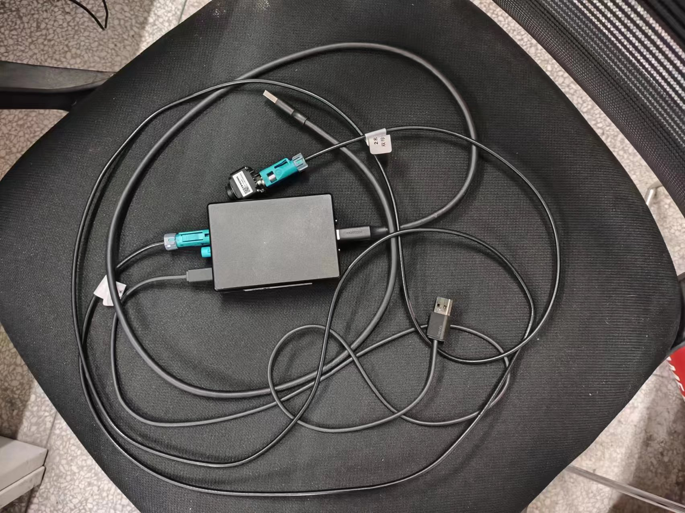
固件刷写
-
首先连接好线束，用
USB数据线连接盒子和电脑USB接口、用FT4222数据线连接盒子和电脑USB接口、用同轴线连接盒子和相机 -
设备管理器中禁用本地相机，只保留SENSING相机，如果线束连接好了，会出现下图两个总线
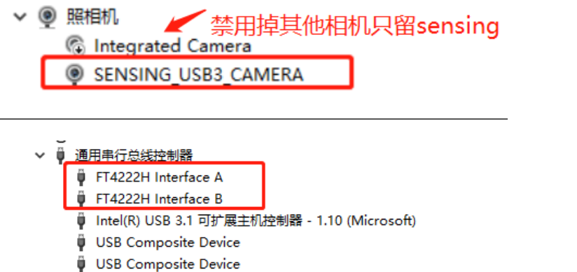 -
打开SensingCaptureV2⼯具软件，加载点亮配置（左上角工具中I2C设备需切换到USB）

-
加载烧写配置
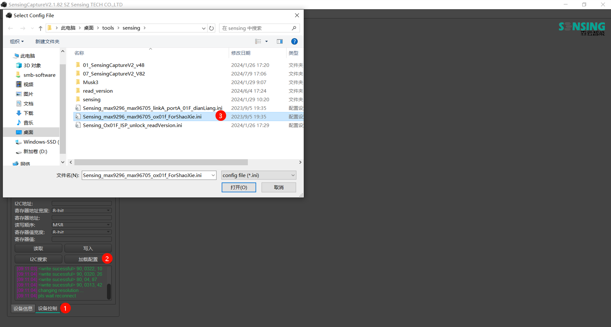 -
I2C设备切换到MCU
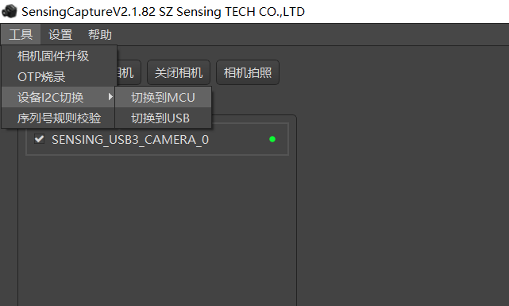 -
打开Musk3，点击Burn
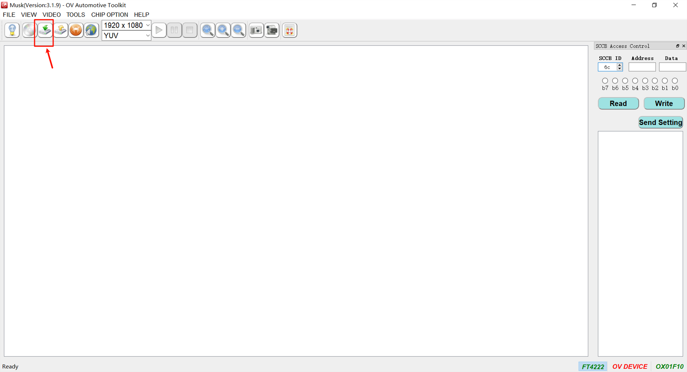 -
选择需要烧写的固件，点击Download，烧写完毕会出现Download succeeds
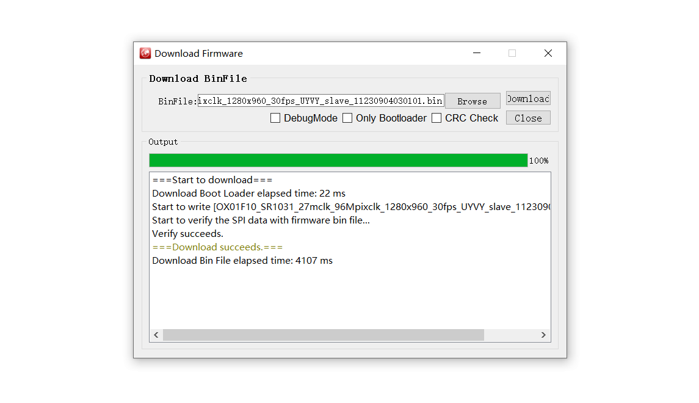
森云提供的出厂版本固件为OX01F10_SR1031_27mclk_96Mpixclk_1280x960_30fps_UYVY_slave_11230904030101.bin
固件版本查看
如果相机刚刚烧写完，则需重新插拔一下相机，才能继续下面操作，线束和烧写时一样的接法-
打开SensingCaptureV2⼯具软件，加载点亮配置（左上角工具中I2C设备需切换到USB）
-
加载读取版本配置
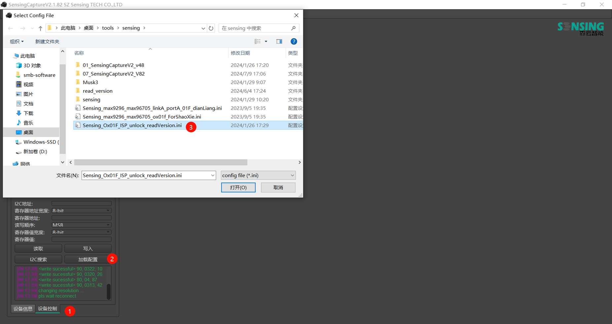 -
I2C设备切换到MCU
-
左上角工具中点击
相机固件升级，选择OV确定后关闭窗口
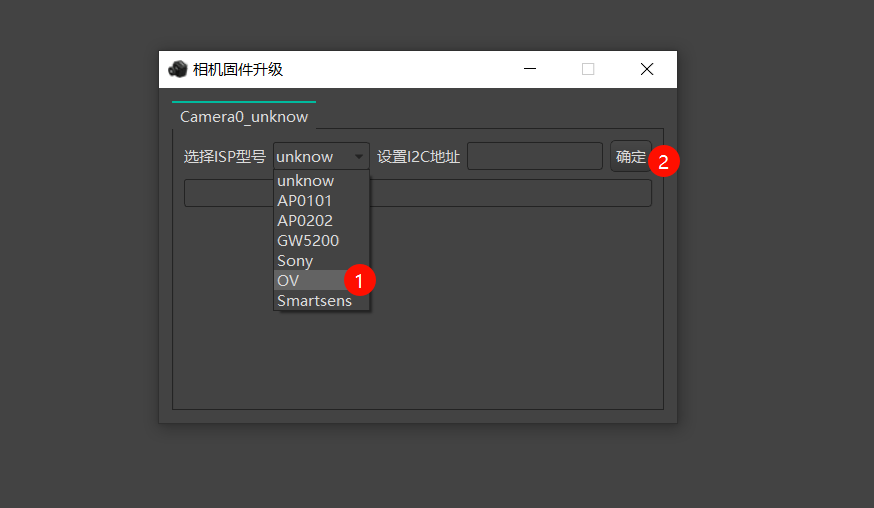 -
重新打开
相机固件升级窗口，点击读取版本号
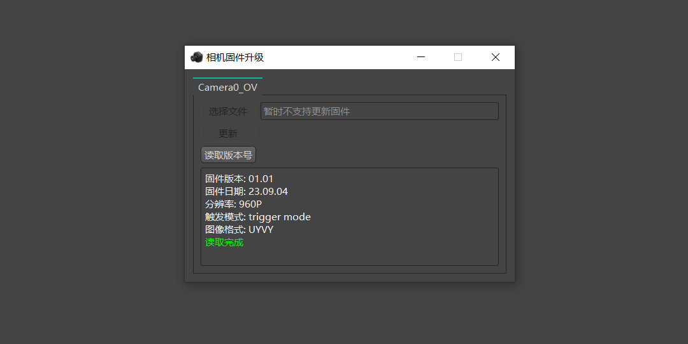

\\10.254.1.251\software\techshow\sensing
一台可以上网的ubuntu18.04的电脑或虚拟机，我这里是使用的虚拟机
移远有已经构建好环境的docker镜像，这里直接使用移远提供的镜像进行签名操作
Docker安装
Docker 分为免费的 CE（Community Edition）社区版本和 EE（Enterprise Edition）企业级付费版本，所以我们这里选择 docker-ce 进行安装。官方安装文档：https://docs.docker.com/engine/install/ubuntu/
首先安装一些工具：
sudo apt-get install ca-certificates curl gnupg lsb-release
接着安装官方的 GPG key：
sudo mkdir -p /etc/apt/keyrings
curl -fsSL https://download.docker.com/linux/ubuntu/gpg | sudo gpg --dearmor -o /etc/apt/keyrings/docker.gpg
最后将 Docker 的库添加到 apt 资源列表中：
echo "deb [arch=$(dpkg --print-architecture) signed-by=/etc/apt/keyrings/docker.gpg] https://download.docker.com/linux/ubuntu $(lsb_release -cs) stable" | sudo tee /etc/apt/sources.list.d/docker.list > /dev/null
接着我们更新一次 apt：
sudo apt update
最后安装 Docker CE 版本：
sudo apt install docker-ce
最后我们将当前用户添加到 docker 用户组中，不然每次使用 docker 命令都需要 sudo 执行，很麻烦：
sudo usermod -aG docker <用户名>
创建官方提供的镜像容器
首先，拉取官方镜像
docker pull registry.cn-hangzhou.aliyuncs.com/quectel/ubuntu:secboot_v2
拉取成功后可以使用docker images查看到该镜像
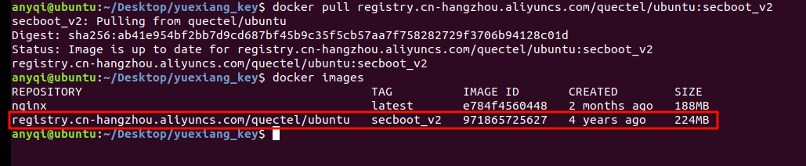
然后创建容器，将目前容器的/media目录持久化共享到本地的一个目录，方便后面文件复制粘贴，后续如果操作失误删除了容器，文件也不会丢失
# 这里使用本地的 ~/test 目录作为共享目录
docker run -it -v ~/test:/media --name test registry.cn-hangzhou.aliyuncs.com/quectel/ubuntu:secboot_v2
将签名工具放进容器中
这里直接放在共享目录下
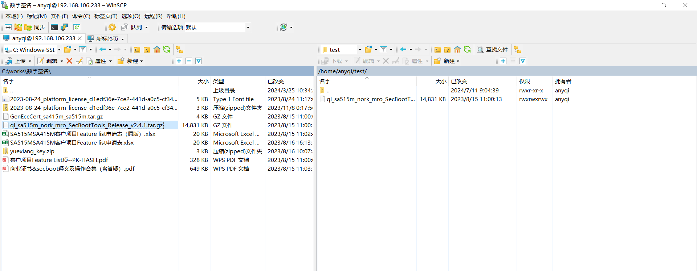
刚刚创建容器完毕会直接进入到容器系统中，我们直接在容器系统中执行解压操作
# 先进入到/media中
cd /media
# 解压
tar -xf ql_sa515m_nork_mro_SecBootTools_Release_v2.4.1.tar.gz
如果不小心退出容器了，则执行下面命令可以重新进入
docker start test docker exec -it test bash
镜像签名
我们直接使用生成好的证书就行，即压缩包yuexiang_key.zip
首先，将yuexiang_key中的四个文件替换到签名工具中的certs目录下
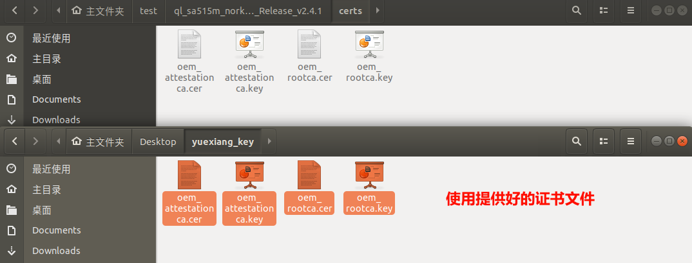
然后，获取证书的PK-HASH
# 在yuexiang_key文件夹中输入
sha384sum oem_rootca.cer
然后，将签名工具中 common/sectools/config/sdx55/sdx55_fuseblower_USER.xml 文件中的
root_cert_hash 值替换成生成的 PK-HASH 值
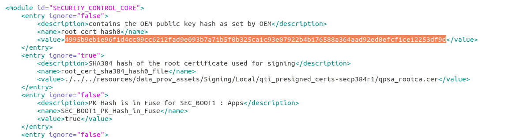
然后，将需要签名的文件放进签名工具 firmwares 目录中
一个没有签过名的固件有下面这些文件需要签名
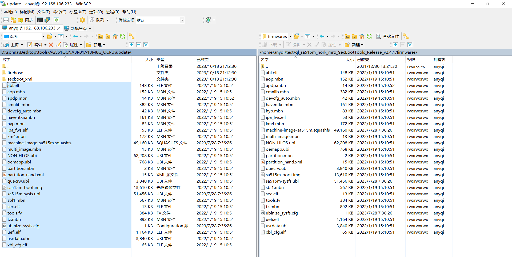 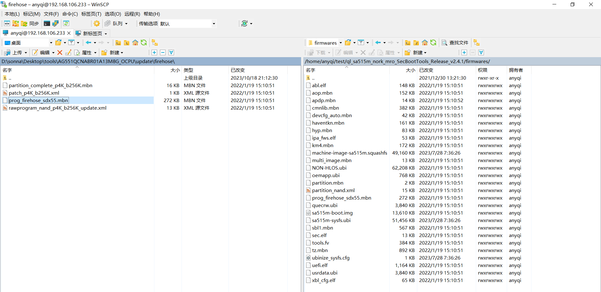最后，进行签名
# 先进入到工具目录下
cd /media/ql_sa515m_nork_mro_SecBootTools_Release_v2.4.1
# 执行脚本进行签名
./signImage.sh
生成好的文件在签名工具的 output/SignImg 目录中，我将对应文件都替换回去
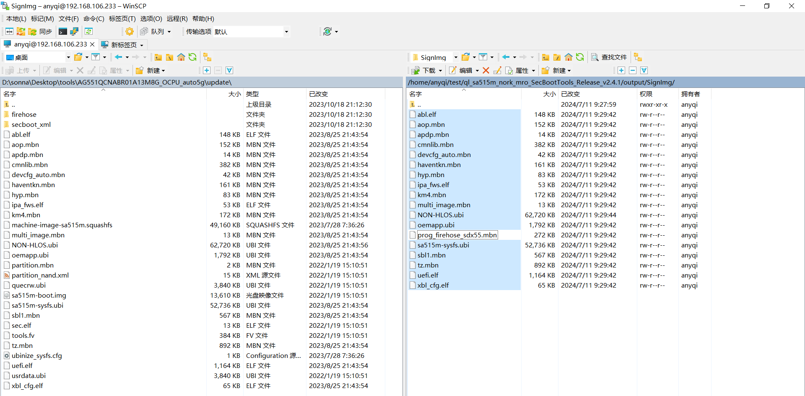 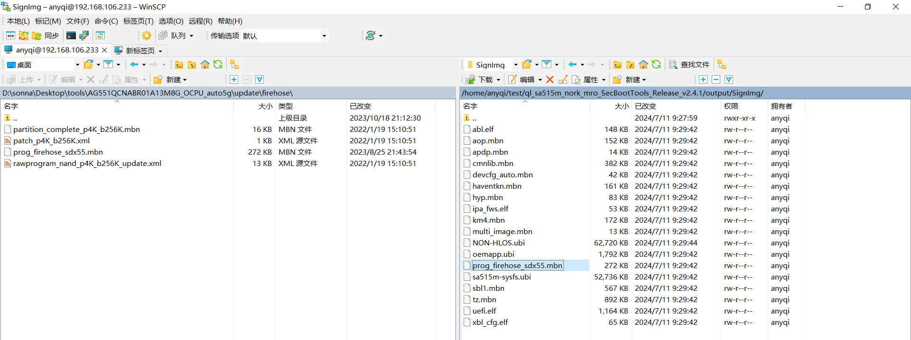至此，固件签名已经完成了
生成 sec.elf 文件
这个是开启secboot需要的文件，在签名工具中执行
# 这里默认你已经按照上面操作替换了PK-HASH了
./genSecdat.sh
sec.elf 文件已经生成过了，如果证书不变的话可以继续使用
\\10.254.1.251\software\techshow\sign-img
需使用Ubuntu16.04系统的电脑/虚拟机
预装环境
apt-get install build-essential bc curl ca-certificates fakeroot gnupg2 libssl-dev lsb-release libelf-dev bison flex
安装交叉编译器
-
将fsl-imx-xwayland-glibc-x86_64-meta-toolchain-aarch64-toolchain-4.14-sumo.sh拷贝到/opt
-
安装交叉编译器
cd /opt
./fsl-imx-xwayland-glibc-x86_64-meta-toolchain-aarch64-toolchain-4.14-sumo.sh
上面步骤需要管理员身份
导入环境变量
source /opt/fsl-imx-xwayland/4.14-sumo/environment-setup-aarch64-poky-linux
解压内核
tar -jxvf imx_4.14.98_2.0.0_ga.tar.bz2
编译内核
- 设备环境变量
- unset LDFLAGS
- unset PKG_CONFIG_PATH
- make defconfig
- make -j12
生成内核目标文件所在目录
-
内核目标文件：
imx_4.14.98_2.0.0_ga/arch/arm64/boot/Image -
设备树目标文件：
imx_4.14.98_2.0.0_ga/arch/arm64/boot/dts/freescale/fsl-imx8qm-mek-jdi-wuxga-lvds0-panel.dtb
sh:
\\10.254.1.251\software\IMX8加森云相机\OS驱动文档
驱动及系统源码:
\\10.254.1.251\software\IMX8加森云相机\OS驱动文档\OS系统及驱动源码+基础烧写版本\驱动及系统源码
电脑、Xavier、网线、杜邦线、双头USB、自控控制器板
软件准备
Ubuntu系统18.04、Linux_for_Tegra_4.4工具包、system.img镜像
硬件连接配置
- J1烧写模式：用杜邦线将烧写模式配置接口中的7脚与2脚短接
- J2烧写模式：用杜邦线将烧写模式配置接口中的8脚与2脚短接
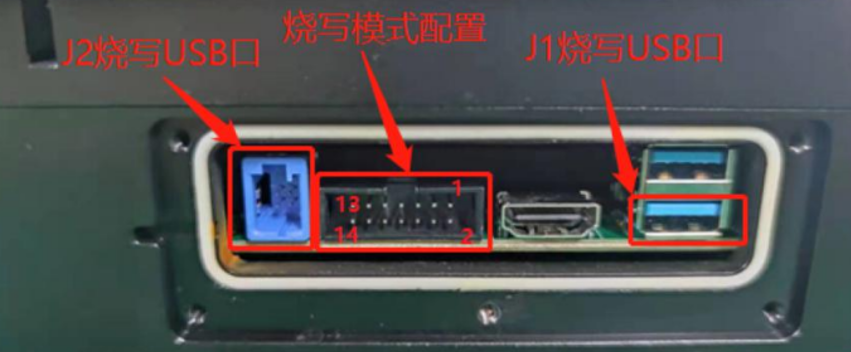
正确连接后，控制器上电后，在本地ubuntu系统中输入命令lsusb，若显示NVidia Corp的设备即表示成功进入烧写模式
镜像准备
需将想要刷入的镜像放到工具包中的bootloader目录下
我们系统版本管理员手中有4个镜像，即101、102、103、104
为了方便刷写操作可以使用链接文件，刷写镜像的时候，将bootloader下的system.img链接文件链接到对应镜像即可，这样有效节约了系统的存储空间
# 在bootloader目录执行，system1.img是101的镜像，需替换成你需要镜像
ln -sf ~/Desktop/system1.img system.img
刷写
进入工具包文件夹，根据自己本机目录修改，然后运行刷机命令
sudo ./flash.sh -r jetson-xavier mmcblk0p1
\\10.254.1.251\software\techshow\flash-xavier
| 脚本 | 解释说明 | 备注 |
|---|---|---|
mount_b.sh |
xavier存储挂载脚本 | 运行后需重启系统 |
automatic_spot_check.sh |
自动驾驶控制器自动化测试脚本 |
\\10.254.1.251\software\techshow\script
| Dynamic | Tech | Reading Total | Finish Total | Used |
|---|---|---|---|---|
| new | 10 min | 20 min | sensing | |
| new | 20 min | 60 min | sign-img | |
| new | 5 min | 60 min | os | |
| new | 10 min | 60 min | flash-xavier | |
| new | 2 min | 20 min | script |